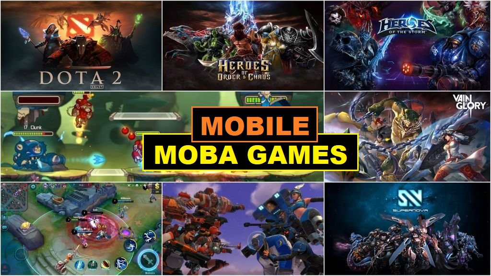
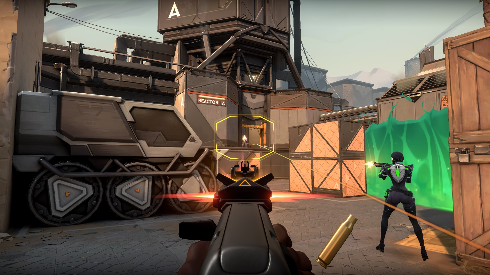
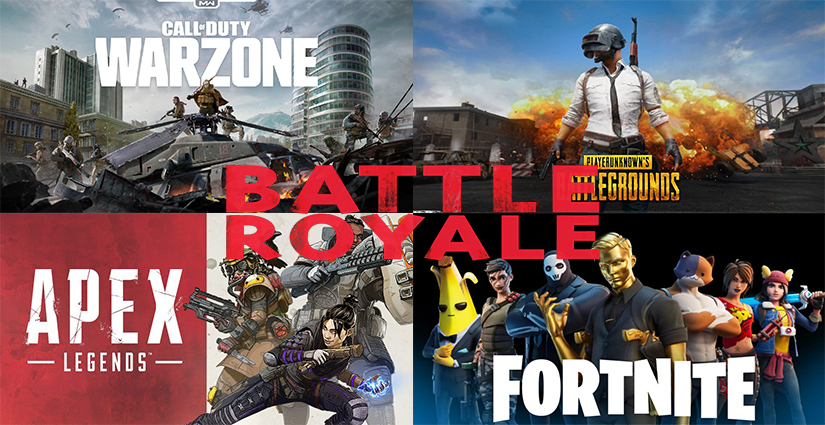
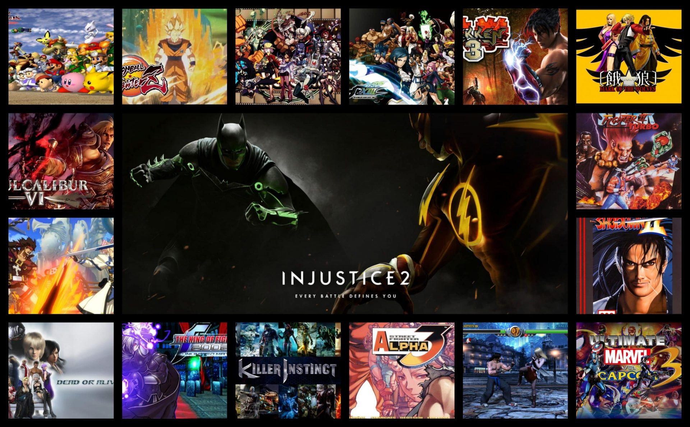

1. MOBA (Multiplayer Online Battle Arena)
MOBA adalah jenis permainan action real time yang merupakan turunan dari genre strategi.
Dalam genre ini, pemain hanya mengontrol seorang karakter atau jagoan yang
memiliki atribut dan kemampuan yang unik dari karakter lainnya, dan hanya
memiliki sebuah tujuan untuk memenangkan permainan, yaitu menghancurkan semua
bangunan inti dari tim lawan. MOBA dikenal dengan ciri khasnya yang dinamik
sehingga tidak akan ada permainan yang sama persis dengan permainan sebelumnya.
Mekanisme permainan yang kompleks disertai dengan kemampuan tiap pemain yang
bervariasi, tentunya sudah menggaransikan pengalaman bermain yang tidak repetitif.

2. First Person Shooter (FPS)
Genre yang cukup populer dari dahulu hingga sekarang adalah FPS.
Apa itu FPS ? FPS (First Person Shooter) adalah genre game yang melibatkan
Pertempuran saling Tembak menembak antar sesama Player atau Player dengan AI
atau Bot dalam game. Game FPS pada umumnya menyajikan animasi 3D yang bersifat
First person perspective, Atau menampilkan sudut pandang depan dari karakter
yang dimainkan. Salah satu yang membuat Genre FPS laku keras ialah para player
dapat merasakan apa yang dirasakan karakter dalam game seperti, Ketegangan,
Panik, Keseruan semua dapat dengan mudah dibayagkan oleh Player.

3. Battle Royale
Permainan battle royale adalah genre permainan video yang memadukan elemen
bertahan hidup dan eksplorasi dari permainan kesintasan dengan mode permainan
orang terakhir yang bertahan. Permainan battle royale menantang banyak pemain,
dimulai dengan peralatan seadanya, lalu mencari senjata dan baju besi dan
mengeliminasi semua lawan sambil menghindari terjebak di luar "zona aman"
yang menyusut, dengan pemenangnya adalah orang yang terakhir bertahan dalam
permainan. Hampir semua permainan battle royale dimainkan secara daring mulai
dari lusinan hingga ratusan pemain lainnya. Nama genre ini diambil dari film
Jepang tahun 2000 Battle Royale, yang menyajikan tema serupa.

4. Fighting (Bertarung)
Genre fighting game ini memang tidak memiliki jumlah player sebanyak
game-game mainstream lainnya. Akan tetapi,jangan terlalu cepat berkesimpulan
dulu. Genre fighting game ini ternyata punya ekosistem esports-nya juga loh!.
Yang membuat permainan di genre fighting game itu sangat berbeda dibandingkan
dengan tipe pertandingan esport di genre game lain itu, menang atau kalah itu
murni dari skill seorang pemain sendiri, tidak ada random factor seperti luck
dari dalam game ataupun mengandalkan team skill.
